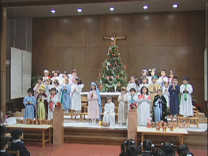

「遠い世界に」をめぐって
〜オートハープはいつまで使われた？〜
「遠い世界に」は67年1月に1番の歌詞ができ、2月に2番ができています。3番はレコーディングをする段になって、2番まででは短いから、というので作られたそうです。そうすると69年ということになるのでしょうか。
初めてステージで歌われたのは、67年4月です。この時オートハープが使われたか、私にはわかりません。
69年のＵＲＣ第1弾「高田渡／五つの赤い風船」で、オートハープを中心とした「遠い世界に」が演奏されています。同じ年にビクターでシングルカットされた「恋は風に乗って／遠い世界に」も同じ演奏です。
このオートハープについて、西岡たかし詩集「50＋OMAKE」に「遠い世界にチューン」という長い詩があります。西岡さんが20年以上弾かなかったオートハープを直しながら記憶をたどる詩です。
西岡さんは「遠い世界に」を弾くためにオートハープのチューニングを改造していました。はじめの1〜2年は弾いていたが、シングアウトスタイルに変わると、転調ができない不便さと、調弦の不安定さから使わなくなったことが書かれています。
69年9月に風船から中川イサトさんが抜けて、オートハープとベースだけで「遠い世界に」を歌うことになって、西岡さんがオートハープを弾くことが難しくなったことが、「満員の木」(ばあすさんが印刷を担当した本)に書いてあります。
70年3月31日/4月1日の風船初リサイタル(東京厚生年金小ホール)で、西岡さんは、岐阜の小学校で「遠い世界に」を歌ったときの喜びを語っています。このとき、「遠い世界にを日本の国歌に・・」とも言っています。(「イン コンサート」より)
オートハープをやめたこと、シングアウトの曲となったこと、そして、「国歌に・・」。これらが、ほぼ同じ時期に起こり、「遠い世界に」がいろんな意味で変化していったのではないか、と私は思っています。
風船らしいサウンドの「遠い世界に」は、オートハープを中心にした演奏だと、私は思います。シングアウトの演奏は歌ってもらうための伴奏だし、ソロ演奏でのオーケストラ版などはまったく別物です。「風船2000」の演奏は、新しい風船サウンドと言えるでしょうが、イントロのピアノが、さあ歌いましょう、という雰囲気なので、やはり、オリジナルのオートハープが好きです。
曲のテンポも、オリジナル以降はシングアウト用にスローになっています。ソロになって以降、西岡さんがシングアウトではなく、自分のために歌った演奏も、いくつか記録されていますが、ゆったりと歌っています。西岡さんが歌い上げるのは好きなんですが、私は、オリジナルのテンポが一番「遠い世界に」らしいと感じます。
「ボクは広野にひとり居る」に収録されている藤原秀子さんの「遠い世界に」は、オリジナルとほぼ同じテンポです。アメリカのバンドによるスタジオ録音で、風船サウンドとはまるで違いますが、フー子ちゃんが、明るく元気に歌い上げているのが、とても好きです。西岡さんが風船解散を決意した難しい状況で歌われたとは、とても信じられません。「遠い世界に」はアップテンポで明るく歌うのが、一番似合っているのではないかな、と私は思っています。
西岡さんは、由紀さおりさんとのトークで、
「自分が作った曲はどの曲も同じに大切だ。『遠い世界に』は楽曲として特に売り出そうとしたのではなく、レコードとしてヒットしたわけでもない。作った自分の思惑を超えて、みなさんに歌われ、広がって行った不思議な曲だ。」
と話しています。（BSハイビジョン「あの人この曲」99年10月放送)
そのサウンドについては、フー子ちゃんと西岡さんの口の形、声質、ハーモニーの音階のとりかたを含め、細かく意図的にデザインされたと話しています。
「遠い世界に」は入念に練り上げられたオリジナルの演奏ではなく、NHKのうたや文部省唱歌も含め、まったくちがった演奏によって広がっていった曲だと言えるでしょう。
西岡さんは最近のコンサートで、
「『遠い世界に』はボクの歌なんです。みなさんに取られたような気がするけど。まずはボクに歌わせてください。」
と話しています。
初めは、西岡さんが自分のために作り、歌っていた曲。それが、風船の曲として歌われ、レコーディングされ、風船の代表曲のようになっていった・・・
私の高校時代、「フーテナニー」という歌声集会みたいな催しにたくさん参加しました。そこでは「遠い世界に」が多く歌われました。一緒に歌うことで、なんとなく参加者が一体感を感じられる歌。国歌にはしてほしくないけれど、わたしたちの歌であってほしい。
でも、私はアップテンポで元気に歌いたい。最近のコンサートでは、シングアウトでもテンポが速くなっています。それがちょっとうれしい今日このごろです。
「遠い世界に」の カバー
若いミュージシャンが歌っている「遠い世界に」を最近聴いた。
ひとりは、「Akico」と言う。1976年5月18日東京都生まれ。「lost child」というミニアルバムを、インディーズの「ネオプレックス」というレーベルから出している。「遠い世界に」はその3曲目だ。ネットで検索すれば、このアルバムの演奏(他の曲)を聴くことができる。
どういうジャンルに入るのか、わからないが、フォークではない。アップテンポのリズムに乗せて、高くソウルフルに張り出す声で歌っている。なぜ、たった4曲の中に「遠い世界に」を入れたのだろう。あとの曲はオリジナルのようだ。小、中学校のときに習って覚えたからだろうか。
なるほど、若い人が歌うとこんなふうになるんだ、と感心したが、何度も聴きたくはならなかった。
もう一人は、矢野真紀というシンガーソングライター。この人はかなりメジャーで、２０枚以上のCDをリリースしている。公式HPで詳しく知ることができる。
「遠い世界に」は、テレビCM(SMBCフレンド証券)のバックに流れている。現在は、シングルがリリースされ、アルバムにも収録されている。矢野さんのライブでは、1コーラスだけだが、アカペラで歌ったりしている。
これまで歌われてきた「遠い世界に」とは大きく違う歌い方で、私は大変気に入っている。シングル、アルバムとも購入してしまったくらいだ。
他にネット検索で次の歌手(グループ)がCDに入れていることがわかった。
青い三角定規・チューインガム(NHKみんなのうた1975年)・チェリッシュ・芹洋子・本田路津子。(きっと他にもたくさんいると思いますが。)
たしか、「モー娘。」脱退組で中澤裕子だったかも歌っていた気がするが、定かではない。
なぜ「遠い世界に」をカバー曲として歌うのだろう。
以前青木まり子さんが、
「『遠い世界に』は多くの人に歌い継がれるスタンダード曲です。」
と掲示板に書かれたことを思い出す。教科書に載り、フォーク系の番組では、よく最後のシングアウトで歌われる。
それはうれしいことだけれど、しかし、プロのミュージシャンがあえて自分のCDに入れるのは、なぜなのだろう。みなが「五つの赤い風船」や西岡さんに傾倒しているとは思えないのだ。「スタンダード」化しているから、この曲を入れておけば無難、というあたりだろうか。それはちょっと悲しい理由だ。
Akicoさん、矢野真紀さんのカバーは、無難な歌唱ではないと思う。私の好みの差はあるが、どちらも「遠い世界に」を自分の世界に持ち込んで表現している。
カバーするのなら、曲自体にほれこんで歌ってほしい。あるいは、オリジナルの演奏に心酔して、それを超えようと試みてほしい。そうでなかったら、曲と曲を作った人に失礼ではないのだろうか。私たちファン(アマチュア)が好きで真似するのとはちがうのだから。
世代を超えて広がれ！「遠い世界に」
〜聖歌「マリアさまのお話」その後〜
もう一昨年になりますが、カトリック系の幼稚園でクリスマスの聖劇で「遠い世界に」の曲にイエズス生誕の歌詞を付けて歌われていることが、風船公式ページに掲載されした。
私が撮った聖劇のビデオを風船事務所に送ったところ、西岡さんにも見ていただいて、感想を公式HPに載せてくださったので、感激したものでした。
昨年度、今年度、と幼稚園では聖劇でこの歌「マリアさまのお話」が、子どもたちによって歌われています。
昨秋、思いがけなく西岡さんご本人とお話しできる、という夢のような機会がありました。その席で、このことが話題になりました。西岡さんに、誰が作詞したのか、楽譜に作曲者名(もちろん西岡さん)が載っているか、と尋ねられたのですが、私は知りませんでした。
今月の始め、今年度の「クリスマス会」ビデオを納品したとき、幼稚園の先生方に尋ねました。そうしたら先生が時間を割いていろいろと調べてくださって、答えが見つかったのです。
作詞者は、浜崎神父という方だそうです。尼崎の方で教会の仕事をなさっておられたのですが、すでに亡くなられたそうです。
「マリアさまのお話」の楽譜は、市販されている聖歌集には載っていませんでした。私が見せていただいたのは、神戸中山手カトリック教会(現「神戸中央カトリック教会」)が製作した、信徒向けの歌集です。非売品で、発行年月日は見ませんでしたが、かなり(10年以上)前のようでした。
その歌集に載った「マリアさまのお話」には、作詞・作曲者とも記載がありませんでした。幼稚園では、2番まで子どもたちが歌っていますが、楽譜を見ると3番まで歌詞があります。
最初に「マリアさまのお話」を聖劇に取り入れた先生は、原曲の「遠い世界に」を知りませんでした。楽譜を紹介されて、いい曲だなと思い、子どもたちに教えたのだそうです。「遠い世界に」が学校の音楽教科書に載ったのは、1975年ごろだったでしょうか。ですから、今三十歳台台のパパママ層は、けっこう「遠い世界に」を習って知っているのですね。この先生は二十歳台半ばですから、この方が学校に入った頃には、もう教科書に載っていなかったのだろう、と思いました。
ところが、さらに若い先生が、
「わたし、『遠い世界に』を習いました。学校のクラス対抗合唱コンクールで歌ったんですよ。」
とおっしゃったのです。これには、私も、「遠い世界に」を習わなかった先生も、びっくりしました。教科書会社によって、今も載せている教科書があるのかもしれませんね。しばし、「遠い世界に」の話で盛り上がってしまいました。
一昨年、私はギターを幼稚園に持ち込んで、先生にお願いして、子どもたちと「マリアさまのお話」を歌わせてもらいました。あの感激は今も忘れません。
さらに、この先生が子どもたちに「遠い世界に」の原曲を教えてくれ、幼稚園の「コンサート(音楽発表会)」で子どもたちが歌ってくれたのです。いきなり、小さな子たちが「とおい〜せかいに〜・・・」と歌いだしたのを聞いたときは、ほんとに涙が出そうになりました。
あとで先生から聞いた話ですが、子どもたちには、新生風船の「遠い世界に」を聞かせて教えたのだそうです。子どもたちは風船の演奏を聞いて、「この人ら、歌うまいなあ〜。」と感心していたとのこと。子どもたちは、西岡さんが作った曲だなんて、知りませんものね。
二十歳台の若い先生が「遠い世界に」を歌い、その教え子の幼な子たちが歌う。すばらしい歌の命は永遠、とはいかないまでも、世代を超えて歌い継がれていくのでしょう。
私がいつまで生きているものかわからないけれど、この歌が少なくとも私より長い命を宿している、と思うと、ちょっとうれしくなりました。

|